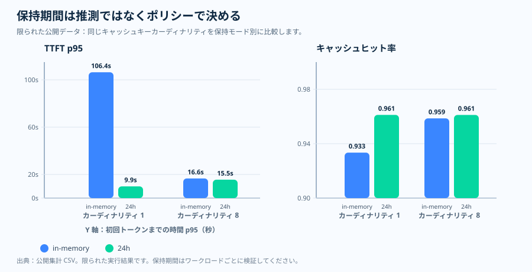

運用エッセイ · プロンプトキャッシュ保持期間
保持期間は前提ではなく、リクエストのポリシーである
対応モデルは対象となるプレフィックスを既定でキャッシュするため、プロンプト
キャッシュは自動的に効くように感じられます。だからそれに寄りかかりたくなります
——ワークロードはアイドルの隙間のあと、シフトの境界をまたいで、バッチの一時停止
のあと、あるいは後の顧客ターンで共有プレフィックスを再利用し、リクエストボディは
単に prompt_cache_retention を省略して、ウィンドウがまだそこにあると
信じます。しかし「既定でキャッシュされる」は「運用が前提とするだけの長さ保持
される」と同じではありません。リクエストが保持期間を省略すると、運用は一度も
要求していないキャッシュウィンドウを当てにしているかもしれません——だから運用上の
問いは「キャッシュは効いているか」ではなく、「このワークロードが依存する再利用
ウィンドウを、リクエストは実際に要求したか」です。
in_memory 既定と、明示的な 24h ウィンドウを
文書化しています。1枚要約はその一つのメッセージ——後からの再利用が重要なら
保持期間を明示する——を運び、境界を示します。保持モードは公式仕様であり、
その隣の初回トークンレイテンシの形は、従量課金で測定したサニタイズ済みの
公開集計を記述的に示したものです。
キャッシュ保持期間の1枚要約 SVG を開く。

なぜ前提にせず、ウィンドウを設定するのか
「既定で十分」という反射は、キャッシュのウィンドウが、ワークロードが再利用の
あいだに残す間隔より長く生き延びる、と仮定します。それを受け入れる前に、二つの
ことを並べておく価値があります。一つ目は Microsoft Learn が文書化していること
です。保持ポリシーは二つあり、in_memory と 24h です。
インメモリのエントリは通常、非アクティブになってから 5〜10 分以内にクリアされ、
最後の使用から 1 時間以内には必ず削除されます。一方、拡張保持はキャッシュ済み
プレフィックスを最大 24 時間までルーティング可能に保てます。gpt-5.4
以前のモデルでは値の省略は in_memory を意味し、プロンプトキャッシュの
価格はどちらのポリシーでも同じです。二つ目は、本リポジトリのソース実行から取った、
保持モードでグループ化した疎なサニタイズ済みの公開集計で、in_memory
と 24h のもとで初回トークンのレイテンシとキャッシュヒット率が実際に
どう動いたかを記述的に示すために含めています。
立ち止まる価値があるのは、その対の部分です。ヒット率だけを見ると安心材料に
読めますが、保持の選択は別のところに現れます。この断面では両モードとも高い
ヒット率（約 0.93〜0.96）を保ったので、ヒット率だけを読めば保持モードはほとんど
効かないように見えてしまいます。初回トークンのレイテンシの裾が、もう半分の物語を
語ります——カーディナリティ 1 で in_memory 系列は約 106,000 ms の
p95 にあり、24h 系列は約 9,900 ms にありました。だから保持の選択は
ヒット率ではなくレイテンシの裾に現れました。だからこそ保持期間は、キャッシュ済み
トークンの比率の隣でレイテンシとともに読むべきであり、単なる性能のつまみではなく
リクエストのポリシーでありガバナンスの選択なのです。二つの保持モード、その寿命、
in_memory の既定、同一の価格、拡張保持のリージョン内条件は
Microsoft Learn が文書化しているものです。レイテンシをヒット率の隣に置いた公開の
断面は、本リポジトリが擁護するソース実行の根拠であって、普遍的なレイテンシ曲線
ではありません。下のチャートがその対を明示します。
問い
後でキャッシュの再利用を見込んでいる運用において、リクエストは実際にその保持期間を要求しているか?
根拠
Microsoft Learn が保持モードを定義し、本リポジトリが断片的な公開レイテンシとヒット率の根拠を補足します。
判断
保持期間を明示し、プレフィックスを安定させ、レイテンシをキャッシュ済みトークンの比率と並べて読みます。
公式の挙動 · 2 つの保持モード
自動キャッシュは、明示的な保持期間と同じではない
Microsoft Learn は 2 つのプロンプトキャッシュ保持ポリシー、
in_memory と 24h を説明しています。インメモリの
キャッシュエントリは、通常は非アクティブになってから 5〜10 分以内にクリア
され、最後の使用から 1 時間以内には必ず削除されます。拡張保持を使えば、
キャッシュ済みプレフィックスを最大 24 時間まで、より長くアクティブに保てます。
既定は短いことがある
gpt-5.4 以前のモデルでは、保持期間を省略すると in_memory を意味します。
長い再利用は明示する
後からの再利用を見込む運用なら、対応している箇所で prompt_cache_retention を 24h に設定します。
価格は判断材料にならない
Microsoft Learn は、プロンプトキャッシュの価格はどちらの保持ポリシーでも同じだと述べています。
観測された根拠 · 断片的な公開スライス
レイテンシが保持期間の選択を可視化した
in_memory と
24h を比較しています。

in_memory と
24h、それぞれ N = 960 レコード。二系列の折れ線グラフであって、
度数のヒストグラムではありません。 読み方： カーディナリティ 1 で
in_memory 系列は約 106,000 ms の p95 にあり、24h
系列は約 9,900 ms にありました——このセルでは保持の選択がレイテンシの裾に
見えました——そしてトラフィックが 8 バケットに広がると二つの系列は近づきました。
根拠の境界： 従量課金の gpt-5.2 での一つの疎なサニタイズ済み公開
集計（PTU ではありません）。ソース実行の根拠であり、普遍的なレイテンシ規則では
ありません。 出典：
results/cache-key-bucketing/ttft_p95_vs_cardinality.csv
（ソース CSV）。

in_memory と 24h 系列、
それぞれ N = 960。 読み方： この断面では両系列とも
高いまま（約 0.93〜0.96）で、カーディナリティ 1 では 24h 系列が
わずかに高くなりました。ここでのより大きな保持の差は、ヒット率ではなく上の
レイテンシのパネルに現れました——だからこそ保持期間は、キャッシュ済みトークンの
比率の隣でレイテンシとともに読むべきです。 根拠の境界： 従量
課金の gpt-5.2 での同じ疎なサニタイズ済み公開集計（PTU ではありません）。記述的
であり、普遍的なキャッシュヒット規則ではありません。 出典：
results/cache-key-bucketing/cache_hit_ratio_vs_cardinality.csv
（ソース CSV）。

| 保持 | カーディナリティ | ヒット率 | TTFT p95 | 定常レコード数 |
|---|---|---|---|---|
| in-memory | 1 | 0.9334 | 106,389.96 ms | 388 |
| 24h | 1 | 0.9612 | 9,899.74 ms | 390 |
| in-memory | 8 | 0.9586 | 16,623.66 ms | 389 |
| 24h | 8 | 0.9612 | 15,549.08 ms | 389 |
これが示すこと、示さないこと
この公開スライスでは、カーディナリティ 1 のセルが最初のトークンの レイテンシにおいて保持期間を可視化しました。それはソース実行から得た 根拠であり、普遍的な規則ではありません。長く通用する教訓はもっと単純で、 保持モード・ヒット率・レイテンシをまとめて読む、ということです。
運用ポリシー · 曖昧さには安全側で倒す
保持期間が重要なら、その選択を観測可能にする
公開リポジトリには、文書化された既定が in_memory である
モデルに対して値の省略を拒否する、小さな保持ポリシーのヘルパーが含まれて
います。厳しく聞こえますが、これはよくある失敗パターンを防ぎます。設計は
より長いキャッシュ期間を前提にしているのに、リクエストボディは黙って短い
既定を採用してしまう、という事態です。
良い例
ワークロードが後からの再利用に依存するときの prompt_cache_retention="24h"。
これも良い例
ワークロードが短い再利用だけを必要とし、それを明示しているときの prompt_cache_retention="in_memory"。
危うい例
運用手順書はより長い期間を前提としているのに、値を未指定のまま放置すること。
ガバナンスに関する注記 · 保持期間はレイテンシだけの話ではない
長い保持期間にはガバナンスの確認も必要
Microsoft Learn は、インメモリのプロンプトキャッシュはすべてのデータ所在 リージョンと互換性があると述べています。拡張保持については、キャッシュ データがリージョン内にとどまるのは Regional Standard または Regional Provisioned モードの場合のみだとしています。これにより保持期間は、 パフォーマンス上の判断であると同時にガバナンス上の判断にもなります。
拡張保持はしたがって、性能上の判断であると同時にガバナンス上の判断でもあります。 拡張ウィンドウに頼る前に、サービングモードがキャッシュデータをリージョン内に 保つことを確認し、その選択を既定値に委ねないようにしてください。
出典と根拠の境界
Tier 1 — サービス契約（Microsoft Learn）。 二つの保持
ポリシー、インメモリのクリアと削除のウィンドウ、24 時間の拡張保持上限、
gpt-5.4 以前の in_memory 既定、両ポリシーで同一の
価格、そしてデータ所在の挙動が、ここに文書化されています。
- [1] Prompt caching with Azure OpenAI —
in_memoryと24hの保持ポリシー、非アクティブ後 5〜10 分以内のインメモリの クリアと最後の使用から 1 時間以内の削除、24 時間の拡張保持上限、gpt-5.4以前のモデルでのin_memory既定、両保持 ポリシーで同一のプロンプトキャッシュ価格、そして拡張保持がキャッシュデータを リージョン内に保つのは Regional Standard または Regional Provisioned の デプロイタイプの場合のみ、というデータ所在の規則を文書化しています。出典：Microsoft Learn ドキュメント（2026-06-04 アクセス）· アーカイブ。
Tier 2 — 運用上の推論（本リポジトリ）。 in_memory
既定のモデルで値が省略されたときに安全側へ倒す保持ポリシーのヘルパーと、疎な
公開のヒット率と初回トークンレイテンシの断面は、Learn の仕様ではなく本リポジトリの
運用上の推論でありソース実行の根拠です。
- [2] 本リポジトリ、
docs/12-prompt-cache-key-policy.md— プロンプトキャッシュキーと保持期間の運用手順書。§4 は文書化されたモデル別の 既定からin_memory既定の表を導き、prompt_cache_retentionを明示することを規定します。出典。 - [3] 本リポジトリ、
batch-runner/batch_runner/cache/retention_policy.py— 文書化された既定がin_memoryであるモデルで値が省略されたときに 例外を投げるensure_explicitヘルパー。Learn の仕様ではなく運用上の 推論です。出典。 - [4] 本リポジトリ、
results/cache-key-bucketing/cache_hit_ratio_vs_cardinality.csv— 保持期間のヒット率と初回トークンレイテンシの表の背後にある、疎な公開集計の 断面。普遍的なレイテンシ規則ではなくソース実行の根拠です。出典。
このトピックが証明するものとしないもの。 アクセス日時点で
Microsoft Learn が明示するプロンプトキャッシュ保持の契約——in_memory
と 24h のポリシー、インメモリのクリアと削除のウィンドウ、24 時間の
拡張上限、gpt-5.4 以前の in_memory 既定、両ポリシーで
同一の価格、拡張保持のリージョン内条件——と、prompt_cache_retention を
明示し、in_memory 既定のモデルで省略されたら安全側へ倒す、という本
リポジトリの経験則を文書化します。単一の公開断面は、カーディナリティ 1 で保持
期間が初回トークンレイテンシに可視化されたことを示しました。それはソース実行の
根拠であって、すべてのモデル・リージョン・トラフィック形状にわたる普遍的な
レイテンシ曲線の証明ではありません。
実務上のルール
実務上のルール：in_memory にフォールバックしうるモデルで、
短い待機ウィンドウを越えてキャッシュの再利用を生かす必要があるなら、既定値を
信頼せず prompt_cache_retention を明示的に設定し、キャッシュ可能な
プレフィックスを安定させ、要求したウィンドウが得られたウィンドウであることを
確かめるために、キャッシュ済みトークンの比率の隣で初回トークンのレイテンシを
読んでください。
次の記事は、単一リクエストのキャッシュポリシーから、GPT-4o のワークロード全体を PTU 上の GPT-5.x へリサイズするときに何が変わるかへと移ります。